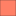
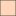

<!doctype html>
<html lang="en">
    <head>
        <meta charset="utf-8">
        <meta http-equiv="X-UA-Compatible" content="IE=edge">
        <meta name="viewport" content="initial-scale=1,user-scalable=no,maximum-scale=1,width=device-width">
        <meta name="mobile-web-app-capable" content="yes">
        <meta name="apple-mobile-web-app-capable" content="yes">
        <link rel="stylesheet" href="css/leaflet.css"><link rel="stylesheet" href="css/L.Control.Locate.min.css">
        <link rel="stylesheet" href="css/qgis2web.css"><link rel="stylesheet" href="css/fontawesome-all.min.css">
        <link rel="stylesheet" href="css/leaflet-search.css">
        <link rel="stylesheet" href="css/leaflet-control-geocoder.Geocoder.css">
        <link rel="stylesheet" href="css/leaflet-measure.css">
        <style>
        html, body, #map {
            width: 100%;
            height: 100%;
            padding: 0;
            margin: 0;
        }
        </style>
        <title></title>
    </head>
    <body>
        <div id="map">
        </div>
        <script src="js/qgis2web_expressions.js"></script>
        <script src="js/leaflet.js"></script><script src="js/L.Control.Locate.min.js"></script>
        <script src="js/leaflet.rotatedMarker.js"></script>
        <script src="js/leaflet.pattern.js"></script>
        <script src="js/leaflet-hash.js"></script>
        <script src="js/Autolinker.min.js"></script>
        <script src="js/rbush.min.js"></script>
        <script src="js/labelgun.min.js"></script>
        <script src="js/labels.js"></script>
        <script src="js/leaflet-control-geocoder.Geocoder.js"></script>
        <script src="js/leaflet-measure.js"></script>
        <script src="js/leaflet-search.js"></script>
        <script src="data/PasesAmricadoSul_0.js"></script>
        <script src="data/UFsdoBrasil_1.js"></script>
        <script src="data/CidadesdeMG_2.js"></script>
        <script src="data/MicrorregiodeDivinpolis_3.js"></script>
        <script src="data/CidadesdaMicrorregio_5.js"></script>
        <script>
        var map = L.map('map', {
            zoomControl:true, maxZoom:28, minZoom:1
        }).fitBounds([[-20.669711096949502,-45.76560113629069],[-19.582425671951487,-43.94645223541527]]);
        var hash = new L.Hash(map);
        map.attributionControl.setPrefix('<a href="https://github.com/tomchadwin/qgis2web" target="_blank">qgis2web</a> &middot; <a href="https://leafletjs.com" title="A JS library for interactive maps">Leaflet</a> &middot; <a href="https://qgis.org">QGIS</a>');
        var autolinker = new Autolinker({truncate: {length: 30, location: 'smart'}});
        L.control.locate({locateOptions: {maxZoom: 19}}).addTo(map);
        var measureControl = new L.Control.Measure({
            position: 'topleft',
            primaryLengthUnit: 'meters',
            secondaryLengthUnit: 'kilometers',
            primaryAreaUnit: 'sqmeters',
            secondaryAreaUnit: 'hectares'
        });
        measureControl.addTo(map);
        document.getElementsByClassName('leaflet-control-measure-toggle')[0]
        .innerHTML = '';
        document.getElementsByClassName('leaflet-control-measure-toggle')[0]
        .className += ' fas fa-ruler';
        var bounds_group = new L.featureGroup([]);
        function setBounds() {
        }
        function pop_PasesAmricadoSul_0(feature, layer) {
            var popupContent = '<table>\
                    <tr>\
                        <td colspan="2">' + (feature.properties['NAME'] !== null ? autolinker.link(feature.properties['NAME'].toLocaleString()) : '') + '</td>\
                    </tr>\
                </table>';
            layer.bindPopup(popupContent, {maxHeight: 400});
        }

        function style_PasesAmricadoSul_0_0() {
            return {
                pane: 'pane_PasesAmricadoSul_0',
                opacity: 1,
                color: 'rgba(132,132,132,1.0)',
                dashArray: '',
                lineCap: 'butt',
                lineJoin: 'miter',
                weight: 1.0, 
                fill: true,
                fillOpacity: 1,
                fillColor: 'rgba(214,211,221,1.0)',
                interactive: true,
            }
        }
        map.createPane('pane_PasesAmricadoSul_0');
        map.getPane('pane_PasesAmricadoSul_0').style.zIndex = 400;
        map.getPane('pane_PasesAmricadoSul_0').style['mix-blend-mode'] = 'normal';
        var layer_PasesAmricadoSul_0 = new L.geoJson(json_PasesAmricadoSul_0, {
            attribution: '',
            interactive: true,
            dataVar: 'json_PasesAmricadoSul_0',
            layerName: 'layer_PasesAmricadoSul_0',
            pane: 'pane_PasesAmricadoSul_0',
            onEachFeature: pop_PasesAmricadoSul_0,
            style: style_PasesAmricadoSul_0_0,
        });
        bounds_group.addLayer(layer_PasesAmricadoSul_0);
        map.addLayer(layer_PasesAmricadoSul_0);
        function pop_UFsdoBrasil_1(feature, layer) {
            var popupContent = '<table>\
                    <tr>\
                        <td colspan="2">' + (feature.properties['ESTADO'] !== null ? autolinker.link(feature.properties['ESTADO'].toLocaleString()) : '') + '</td>\
                    </tr>\
                </table>';
            layer.bindPopup(popupContent, {maxHeight: 400});
        }

        function style_UFsdoBrasil_1_0() {
            return {
                pane: 'pane_UFsdoBrasil_1',
                opacity: 1,
                color: 'rgba(79,79,79,1.0)',
                dashArray: '',
                lineCap: 'butt',
                lineJoin: 'miter',
                weight: 1.0, 
                fill: true,
                fillOpacity: 1,
                fillColor: 'rgba(255,211,182,1.0)',
                interactive: true,
            }
        }
        map.createPane('pane_UFsdoBrasil_1');
        map.getPane('pane_UFsdoBrasil_1').style.zIndex = 401;
        map.getPane('pane_UFsdoBrasil_1').style['mix-blend-mode'] = 'normal';
        var layer_UFsdoBrasil_1 = new L.geoJson(json_UFsdoBrasil_1, {
            attribution: '',
            interactive: true,
            dataVar: 'json_UFsdoBrasil_1',
            layerName: 'layer_UFsdoBrasil_1',
            pane: 'pane_UFsdoBrasil_1',
            onEachFeature: pop_UFsdoBrasil_1,
            style: style_UFsdoBrasil_1_0,
        });
        bounds_group.addLayer(layer_UFsdoBrasil_1);
        map.addLayer(layer_UFsdoBrasil_1);
        function pop_CidadesdeMG_2(feature, layer) {
            var popupContent = '<table>\
                    <tr>\
                        <td colspan="2">' + (feature.properties['NM_MUNICIP'] !== null ? autolinker.link(feature.properties['NM_MUNICIP'].toLocaleString()) : '') + '</td>\
                    </tr>\
                </table>';
            layer.bindPopup(popupContent, {maxHeight: 400});
        }

        function style_CidadesdeMG_2_0() {
            return {
                pane: 'pane_CidadesdeMG_2',
                opacity: 1,
                color: 'rgba(113,113,113,1.0)',
                dashArray: '',
                lineCap: 'butt',
                lineJoin: 'miter',
                weight: 1.0, 
                fill: true,
                fillOpacity: 1,
                fillColor: 'rgba(232,232,232,1.0)',
                interactive: true,
            }
        }
        map.createPane('pane_CidadesdeMG_2');
        map.getPane('pane_CidadesdeMG_2').style.zIndex = 402;
        map.getPane('pane_CidadesdeMG_2').style['mix-blend-mode'] = 'normal';
        var layer_CidadesdeMG_2 = new L.geoJson(json_CidadesdeMG_2, {
            attribution: '',
            interactive: true,
            dataVar: 'json_CidadesdeMG_2',
            layerName: 'layer_CidadesdeMG_2',
            pane: 'pane_CidadesdeMG_2',
            onEachFeature: pop_CidadesdeMG_2,
            style: style_CidadesdeMG_2_0,
        });
        bounds_group.addLayer(layer_CidadesdeMG_2);
        map.addLayer(layer_CidadesdeMG_2);
        function pop_MicrorregiodeDivinpolis_3(feature, layer) {
            var popupContent = '<table>\
                    <tr>\
                        <td colspan="2">' + (feature.properties['NM_MICRO'] !== null ? autolinker.link(feature.properties['NM_MICRO'].toLocaleString()) : '') + '</td>\
                    </tr>\
                </table>';
            layer.bindPopup(popupContent, {maxHeight: 400});
        }

        function style_MicrorregiodeDivinpolis_3_0() {
            return {
                pane: 'pane_MicrorregiodeDivinpolis_3',
                opacity: 1,
                color: 'rgba(35,35,35,1.0)',
                dashArray: '',
                lineCap: 'butt',
                lineJoin: 'miter',
                weight: 1, 
                fill: true,
                fillOpacity: 1,
                fillColor: 'rgba(255,128,102,1.0)',
                interactive: true,
            }
        }
        map.createPane('pane_MicrorregiodeDivinpolis_3');
        map.getPane('pane_MicrorregiodeDivinpolis_3').style.zIndex = 403;
        map.getPane('pane_MicrorregiodeDivinpolis_3').style['mix-blend-mode'] = 'normal';
        var layer_MicrorregiodeDivinpolis_3 = new L.geoJson(json_MicrorregiodeDivinpolis_3, {
            attribution: '',
            interactive: true,
            dataVar: 'json_MicrorregiodeDivinpolis_3',
            layerName: 'layer_MicrorregiodeDivinpolis_3',
            pane: 'pane_MicrorregiodeDivinpolis_3',
            onEachFeature: pop_MicrorregiodeDivinpolis_3,
            style: style_MicrorregiodeDivinpolis_3_0,
        });
        bounds_group.addLayer(layer_MicrorregiodeDivinpolis_3);
        map.addLayer(layer_MicrorregiodeDivinpolis_3);
        map.createPane('pane_Dados1990_4');
        map.getPane('pane_Dados1990_4').style.zIndex = 404;
        var img_Dados1990_4 = 'data/Dados1990_4.png';
        var img_bounds_Dados1990_4 = [[-20.555429994,-45.507664147],[-19.688735408,-44.445046997]];
        var layer_Dados1990_4 = new L.imageOverlay(img_Dados1990_4,
                                              img_bounds_Dados1990_4,
                                              {pane: 'pane_Dados1990_4'});
        bounds_group.addLayer(layer_Dados1990_4);
        map.addLayer(layer_Dados1990_4);
        function pop_CidadesdaMicrorregio_5(feature, layer) {
            var popupContent = '<table>\
                    <tr>\
                        <td colspan="2">' + (feature.properties['NM_MUNICIP'] !== null ? autolinker.link(feature.properties['NM_MUNICIP'].toLocaleString()) : '') + '</td>\
                    </tr>\
                    <tr>\
                        <td colspan="2">' + (feature.properties['Populacao'] !== null ? autolinker.link(feature.properties['Populacao'].toLocaleString()) : '') + '</td>\
                    </tr>\
                    <tr>\
                        <td colspan="2">' + (feature.properties['Areatot'] !== null ? autolinker.link(feature.properties['Areatot'].toLocaleString()) : '') + '</td>\
                    </tr>\
                    <tr>\
                        <td colspan="2">' + (feature.properties['Areaveg'] !== null ? autolinker.link(feature.properties['Areaveg'].toLocaleString()) : '') + '</td>\
                    </tr>\
                    <tr>\
                        <td colspan="2">' + (feature.properties['Areaurb'] !== null ? autolinker.link(feature.properties['Areaurb'].toLocaleString()) : '') + '</td>\
                    </tr>\
                    <tr>\
                        <td colspan="2">' + (feature.properties['Densidade'] !== null ? autolinker.link(feature.properties['Densidade'].toLocaleString()) : '') + '</td>\
                    </tr>\
                </table>';
            layer.bindPopup(popupContent, {maxHeight: 400});
        }

        function style_CidadesdaMicrorregio_5_0() {
            return {
                pane: 'pane_CidadesdaMicrorregio_5',
                opacity: 1,
                color: 'rgba(35,35,35,1.0)',
                dashArray: '',
                lineCap: 'butt',
                lineJoin: 'miter',
                weight: 2.0, 
                fill: true,
                fillOpacity: 1,
                fillColor: 'rgba(190,207,80,0.0)',
                interactive: true,
            }
        }
        map.createPane('pane_CidadesdaMicrorregio_5');
        map.getPane('pane_CidadesdaMicrorregio_5').style.zIndex = 405;
        map.getPane('pane_CidadesdaMicrorregio_5').style['mix-blend-mode'] = 'normal';
        var layer_CidadesdaMicrorregio_5 = new L.geoJson(json_CidadesdaMicrorregio_5, {
            attribution: '',
            interactive: true,
            dataVar: 'json_CidadesdaMicrorregio_5',
            layerName: 'layer_CidadesdaMicrorregio_5',
            pane: 'pane_CidadesdaMicrorregio_5',
            onEachFeature: pop_CidadesdaMicrorregio_5,
            style: style_CidadesdaMicrorregio_5_0,
        });
        bounds_group.addLayer(layer_CidadesdaMicrorregio_5);
        map.addLayer(layer_CidadesdaMicrorregio_5);
        var osmGeocoder = new L.Control.Geocoder({
            collapsed: true,
            position: 'topleft',
            text: 'Search',
            title: 'Testing'
        }).addTo(map);
        document.getElementsByClassName('leaflet-control-geocoder-icon')[0]
        .className += ' fa fa-search';
        document.getElementsByClassName('leaflet-control-geocoder-icon')[0]
        .title += 'Search for a place';
        var baseMaps = {};
        L.control.layers(baseMaps,{' Cidades da Microrregião': layer_CidadesdaMicrorregio_5,"Dados 1990": layer_Dados1990_4,' Microrregião de Divinópolis': layer_MicrorregiodeDivinpolis_3,' Cidades de MG': layer_CidadesdeMG_2,' UFs do Brasil': layer_UFsdoBrasil_1,' Países América do Sul': layer_PasesAmricadoSul_0,}).addTo(map);
        setBounds();
        map.addControl(new L.Control.Search({
            layer: layer_CidadesdeMG_2,
            initial: false,
            hideMarkerOnCollapse: true,
            propertyName: 'NM_MUNICIP'}));
        document.getElementsByClassName('search-button')[0].className +=
         ' fa fa-binoculars';
        L.ImageOverlay.include({
            getBounds: function () {
                return this._bounds;
            }
        });
        </script>
    </body>
</html>
